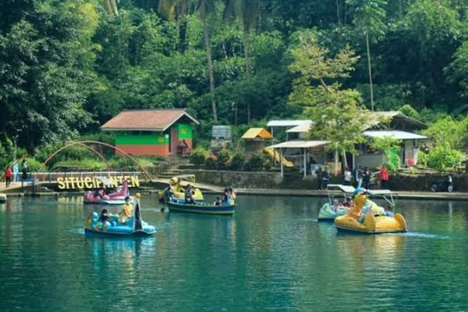
situGunung Kuning, Sindang
Situ Cipanten
Duduk santai di tepi situ sambil melihat warna air dan pepohonan.
Lihat detail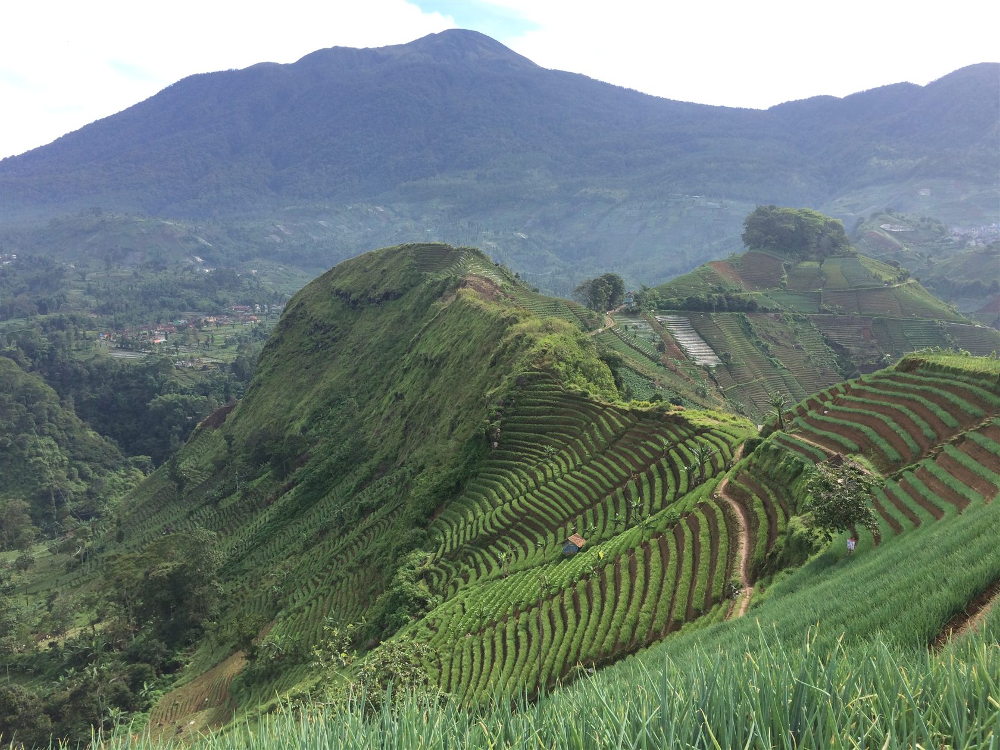
Majalengka, Jawa Barat
Cari curug, situ, atau kebun berundak buat akhir pekanmu. Cek jam buka, tiket, dan cara berkunjung sebelum berangkat.
Kategori wisata
Pilih suasana yang ingin kamu temui.
Jelajah destinasi
Lihat lokasinya, pilih suasananya, lalu cek info sebelum berangkat.
Belum ketemu. Coba nama tempat lain atau lihat semua kategori.

situGunung Kuning, Sindang
Duduk santai di tepi situ sambil melihat warna air dan pepohonan.
Lihat detail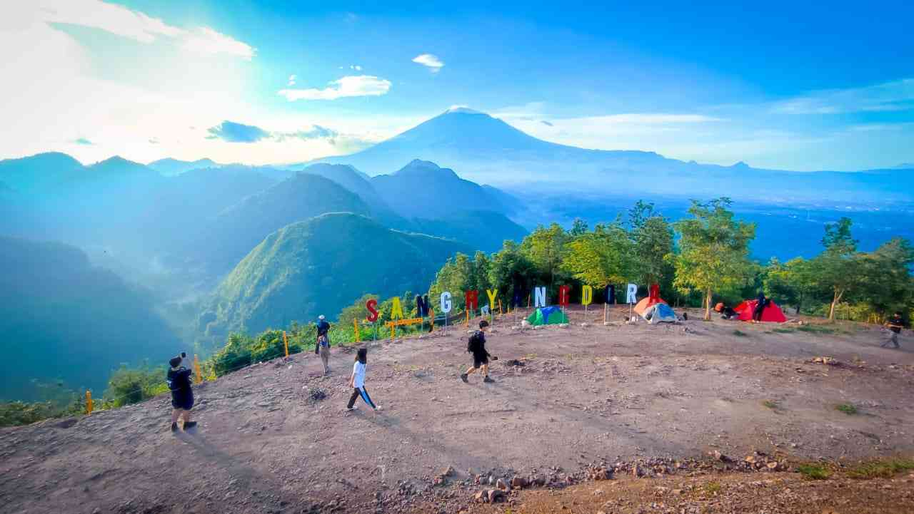
BukitDesa Leuwikujang, Leuwimunding
Naik ke bukit untuk menikmati panorama atau bermalam di area kemah.
Lihat detail Curug
CurugKampung Apuy, Desa Argamukti, Argapura
Dengar gemuruh air terjun bertingkat dan mampir ke saung di kaki Gunung Ciremai.
Lihat detail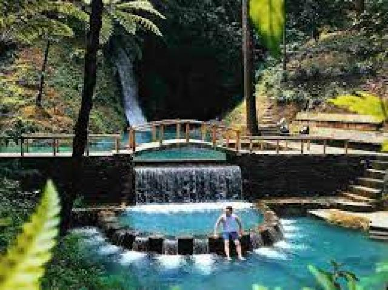
CurugDesa Bantaragung, Sindangwangi
Lihat air terjun dan kolam berundak di Bantaragung. Kalau ingin bermalam, tanyakan paket kemahnya.
Lihat detail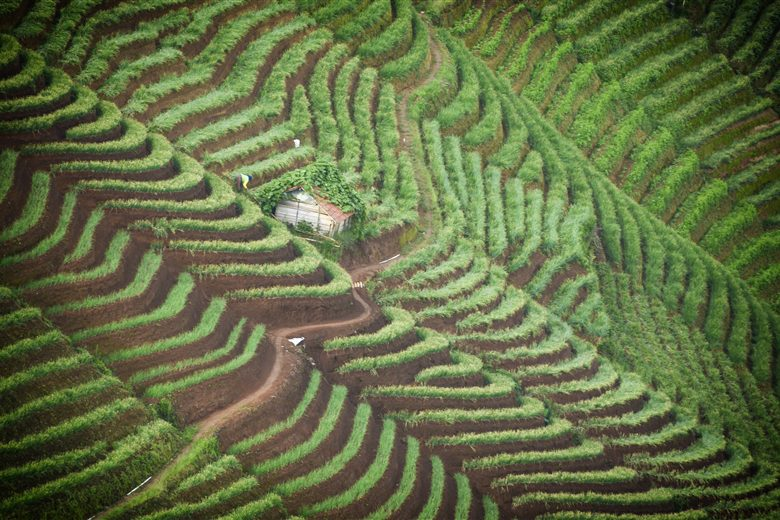
TeraseringArgapura
Lihat petak kebun sayur mengikuti lekuk lereng. Pemandangannya berubah mengikuti musim tanam.
Lihat detail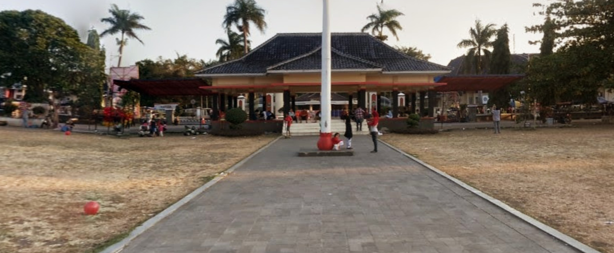
Taman kotaMajalengka Kulon, Kecamatan Majalengka
Mampir sore untuk jalan santai, duduk di bangku taman, atau jajan di sekitar alun-alun.
Lihat detail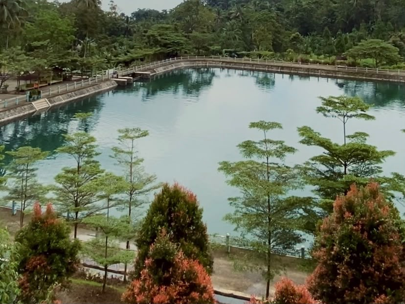
situDesa Teja, Rajagaluh
Piknik di bawah pepohonan atau duduk santai di tepi situ.
Lihat detail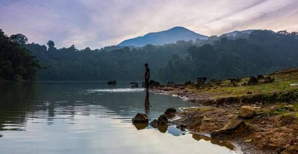
situDesa Sangiang, Banjaran
Singgah di tepi situ dan nikmati suasana pepohonannya.
Lihat detail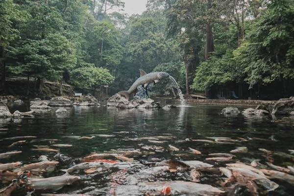
situDesa Pajajar, Rajagaluh
Jalan santai di sekitar situ di kawasan wisata Prabu Siliwangi.
Lihat detail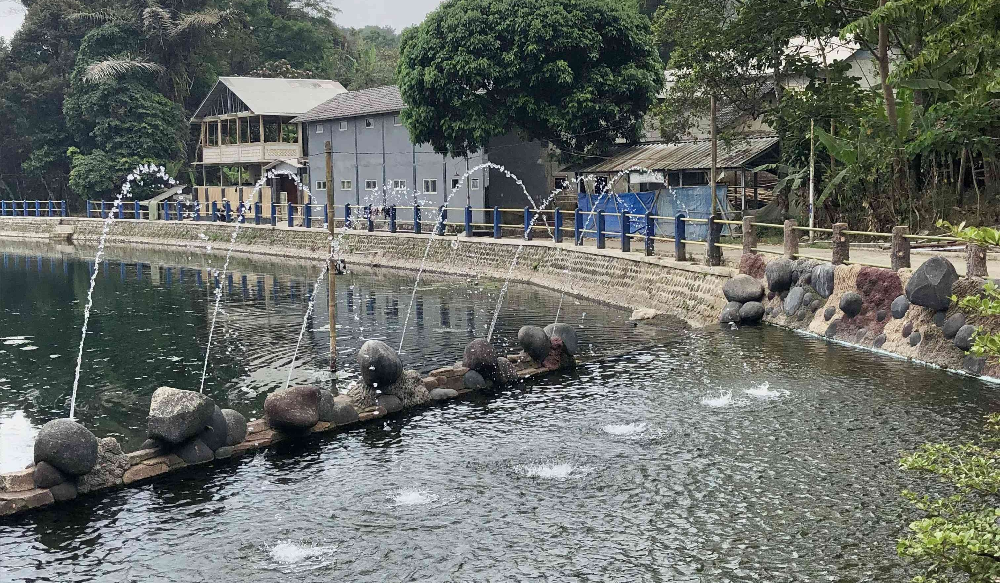
situ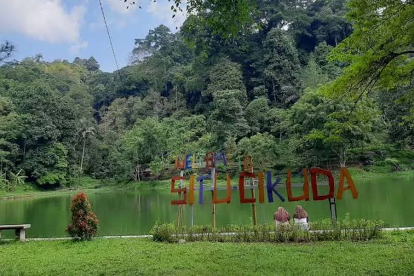
situ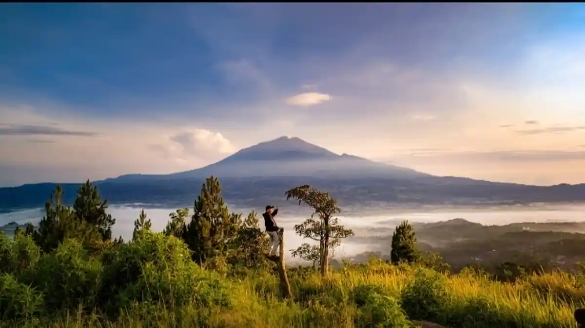
BukitDesa Sedareja, Cingambul
Pilih jalan pagi sambil menikmati panorama atau bawa tenda untuk bermalam.
Lihat detail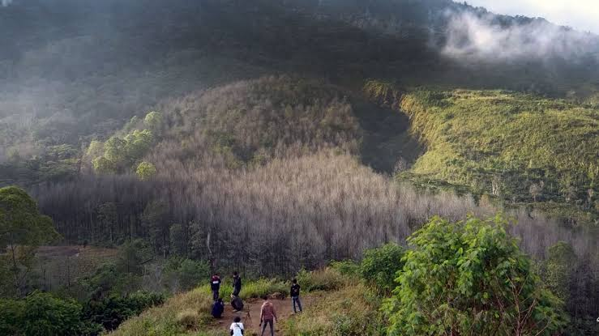
BukitSadarehe, Desa Payung, Rajagaluh
Susuri jalan setapak menuju bukit lewat kawasan Sadarehe.
Lihat detail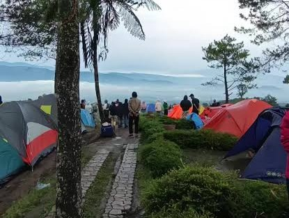
BukitCiinjuk, Desa Cipulus, Cikijing
Nikmati pemandangan dari bukit dan tanya pengelola kalau ingin bermalam.
Lihat detail Curug
CurugDusun Tapak Kuda, Desa Sadawangi, Lemahsugih
Kenali curug bertingkat yang juga disebut Curug Tapak Kuda atau Curug Citerus.
Lihat detail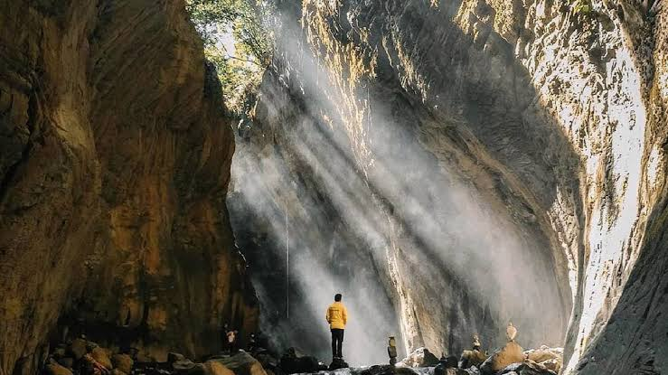
CurugArgapura
Lihat air terjun dari jalur pengunjung. Saat cahaya pas, bias air bisa membentuk pelangi.
Lihat detailSelayang pandang
Di Argapura, kebun mengikuti lekuk lereng. Di Sindangwangi, kamu bisa singgah di curug dan melihat persawahan. Di pusat Majalengka, ada ruang terbuka buat jalan sore.
Kenali Desa Wisata Bantaragung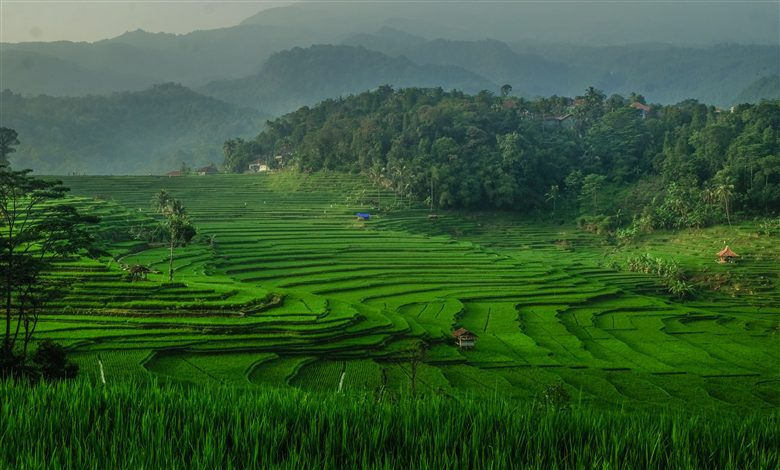
Panduan berkunjung
Pilih satu hal yang bisa kamu lakukan sebelum berangkat. Kebiasaan kecil bikin jalur, air, dan ruang bersama lebih nyaman buat pengunjung berikutnya.
Bawa botol isi ulang dan siapkan kantong buat bungkus makanan. Kalau belum ketemu tempat sampah, simpan dulu sampai pulang.
Pakai jalur dan titik foto yang tersedia. Di kebun berundak, beri ruang supaya warga tetap leluasa bekerja.
Simpan sampah jauh dari tepi situ dan aliran curug. Kalau mau pakai sabun, gunakan kamar bilas yang disediakan.
Sampah yang tercecer di tepian mudah terbawa ke air.
Jalur pintas bisa mengikis tanah dan merusak tanaman.
Air dari curug terus mengalir ke bagian hilir.
Undakan yang kamu lihat adalah lahan kerja warga.
Banyak orang memakai ruang ini bergantian setiap hari.